Next: The Potts Model treated
Up: Densities of States: The
Previous: The Algorithm
An impressive example of the power of the WL method appears in the
latter of the two original WL papers [23]. Here, the
object of study is the Potts model [27]. This is an  lattice of
lattice of  sites (i.e., 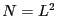) where each site can have a
spin value, 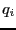, between 1 and
sites (i.e., 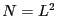) where each site can have a
spin value, 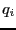, between 1 and  . WL considered the ten-state
model; = 10. The Hamiltonian of the Potts model is
. WL considered the ten-state
model; = 10. The Hamiltonian of the Potts model is
where the sum is over all nearest neighbor pairs.
Under periodic boundary conditions, the ground state energy of the
Potts model is given by
and the density of states at 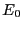 (i.e., the degeneracy
of the ground state) is easily seen to be
The energy levels are
The ten-state Potts model displays a first-order phase transition with
a critical temperature of
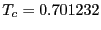 in the thermodynamic limit
(
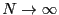). The two coexisting phases are characterized
by an average energy per particle of -0.965 and -1.671, respectively.
First, let's conduct normal NVT sampling of a ten-state,  = 12
Potts model at temperatures well below, near, and well-above the
critical temperature. (The dual purpose code
wl-w.c
can accomplish this.) At
precisely the critical temperature, we should see two peaks of equal
height in the energy histogram. Our trial move will consist of
randomly selecting one of the 144 spins and then randomly selecting a
spin value between 1 and 10. Below, I show the histograms of energy
per spin after 10
= 12
Potts model at temperatures well below, near, and well-above the
critical temperature. (The dual purpose code
wl-w.c
can accomplish this.) At
precisely the critical temperature, we should see two peaks of equal
height in the energy histogram. Our trial move will consist of
randomly selecting one of the 144 spins and then randomly selecting a
spin value between 1 and 10. Below, I show the histograms of energy
per spin after 10 cycles (one cycle = 144 attempted flips) for
various temperatures, all begun from the same initial (randomly
assigned) configuration which is initially in the high-energy regime
(E/N -0.25). (
cycles (one cycle = 144 attempted flips) for
various temperatures, all begun from the same initial (randomly
assigned) configuration which is initially in the high-energy regime
(E/N -0.25). ( = 0.70991 is the critical temperature,
= 0.70991 is the critical temperature,
 , for the = 12, = 10 Potts model as calculated by Wang
and Landau.)
, for the = 12, = 10 Potts model as calculated by Wang
and Landau.)
| 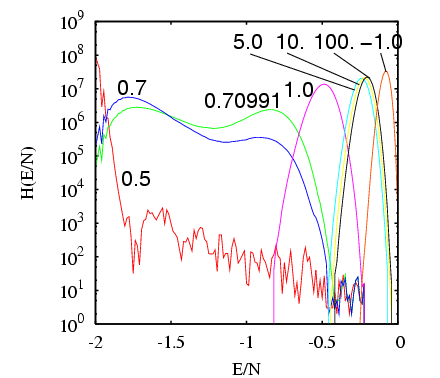 |
Histograms of energy per spin, 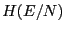, for the = 12 ten-state
Potts model at temperatures 0.5, 0.7, 0.70991, and 1.0, 5.0, and 10.0,
after 10 cycles using conventional Monte Carlo.
|
|
Notice that precisely pinpointing using a series of NVT MC
simulations (if we assume that 10 cycles is enough - I have not
yet claimed that it is) would be extremely difficult. For = 0.7,
the peaks are not of equal height, but an increase of a mere 0.0991
brings them to the same height (the signature of a critical
temperature). How would we know how to zoom in on = 0.70991? It
is conceivable that we could embed NVT MC inside some nonlinear
optimization routine whose objective function is a measure of relative
peak heights, which must be minimized by allowing to vary. This
could be automated and could in principle provide a very accurate
after a finite number of runs. But we don't know ahead of time
how many runs would be required, nor if our optimization scheme is
efficient enough to allow us to find to some tolerable level of
precision in a reasonable time.
Now, imagine that we could in some way compute the density of states,
 , from a single simulation. We could then easily arrive at
an estimate for by simply evaluating canonical energy
histograms at various , each constructed from ,
until we find one for which the peak heights are the same.
Consider:
, from a single simulation. We could then easily arrive at
an estimate for by simply evaluating canonical energy
histograms at various , each constructed from ,
until we find one for which the peak heights are the same.
Consider:
Can we compute from an NVT MC simulation? In principle,
yes. We could rearrange Eq. 358:
This certainly suggests that if we run NVT MC, tabulate a histogram of
energy states, and the postmultiply it by the ``anti-Boltzmann''
factor
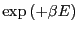, we will recover . But
the data from the 10-cycle MC runs shown in the above figure kills
any hope of being able to do this in practice. You can see that none
of the histograms cover the entire domain of accessible energy levels,
so we cannot use any single histogram to produce . You can
also see that the very highest energy levels are not accessed even at
extremely high temperatures. (Interestingly, a negative
temperature resolves this part of the energy spectrum quite well; this
indicates that the entropy of the Potts model for 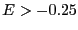 decreases with increasing energy.) The histogram taken at the lowest
temperature appears to cover a broad part of the domain, but most of
it is covered with very poor statistical accuracy, as evidenced by the
large fluctuations. The histograms taken near the critical
temperature of = 0.70991 cover a relatively broad domain
relatively well, so it is at least conceivable that we can produce
part of from these histograms.
The figure below shows the application of Eq. 359 to
determine partial densities of states for each histogram
shown in the previous figure.
| 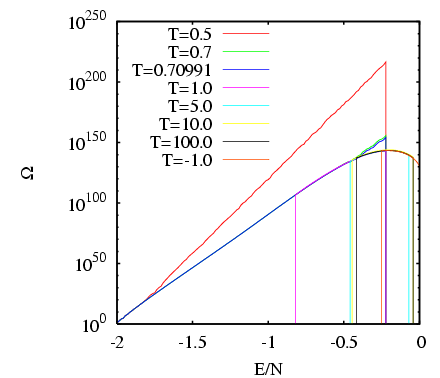 |
Partial densities of state computed from
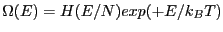 and scaled such that
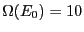 for the
= 12 ten-state Potts model at temperatures 0.5, 0.7, 0.70991, 1.0,
5.0, 10.0, and -1.0 after 10 cycles using conventional Monte Carlo.
for = 1.0 is scaled to match for
= 0.70991, and 's at higher 's (and = 1.0) are
matched to those at neighboring lower .
|
|
From this data, we can see the trace of the curve defining the true density of states. It appears to have a maximum at
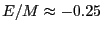 of a whopping 10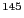 states. We also see that the density
of states decreases with energy for 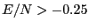; energy levels
higher than this are apparently sampled well in an MC run with negative temperature. Now, in order to piece the true
together from these many runs, we took advantage of the fact that
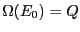, and scaled the densities to have them match in the
overlapping regions. Notice that the two partial densities of states
for = 0.7 and 0.70991 agree (not surprising), but that the density
of states for = 0.5 appears much too large. All told, it appears
that the total curve is adequately represented by the
anti-Boltzmann-treated histograms from just three 10-cycle NVT MC
runs:
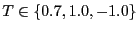.
Now, I have to admit that I have cheated somewhat. I knew ahead of
time that the density of states has a maximum, so I knew that negative
temperature MC would resolve some part of it. I also knew that the
critical temperature is 0.70991, but it was nice to see that number
supported by standard MC. Let us now learn how to compute  from a single MC run using the Wang-Landau technique.
from a single MC run using the Wang-Landau technique.
Next: The Potts Model treated
Up: Densities of States: The
Previous: The Algorithm
cfa22@drexel.edu